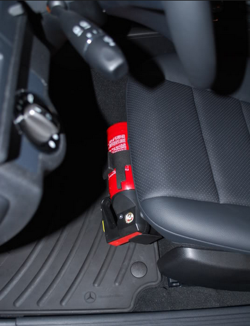
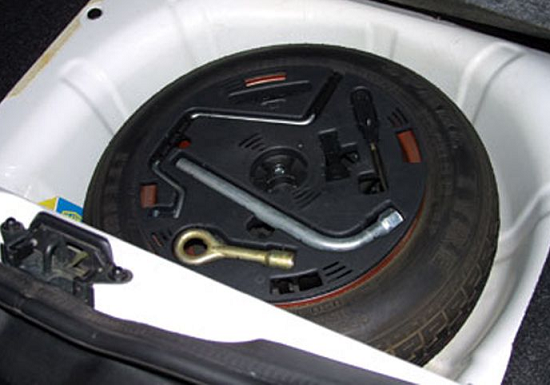
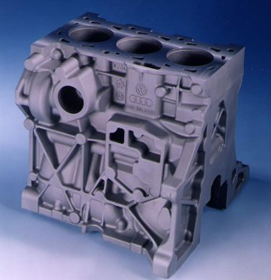
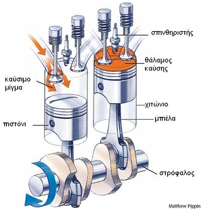
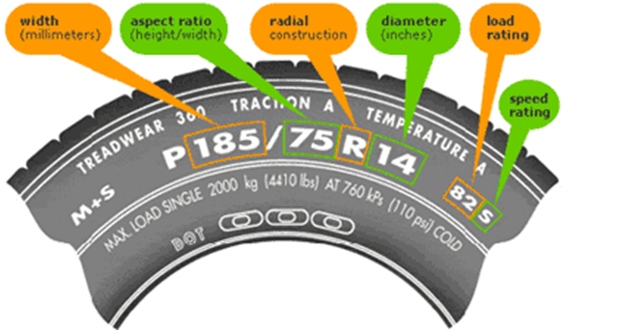
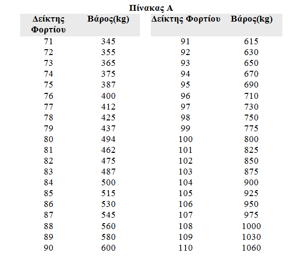
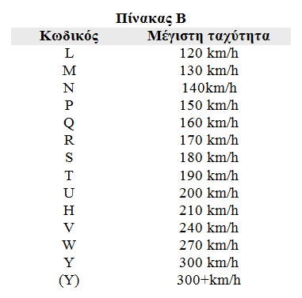
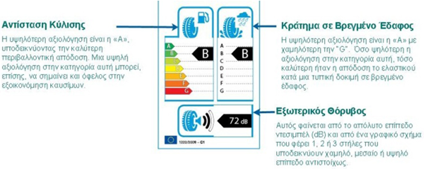
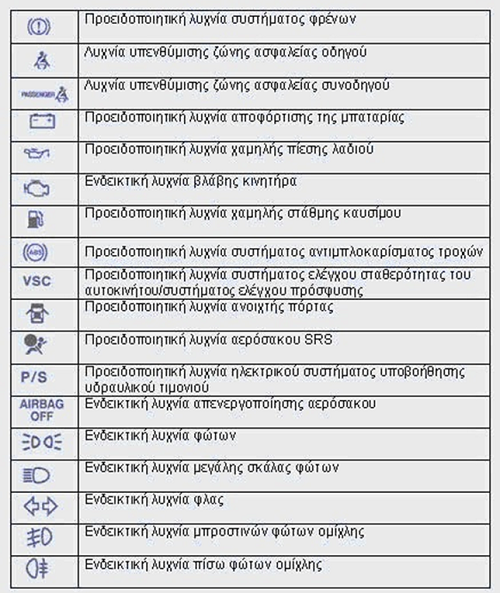

Στο port baggage (συνήθως) του οχήματός μας πρέπει οπωσδήποτε να υπάρχουν πάντα:
Το φαρμακείο είναι καλό να είναι εξοπλισμένο σύμφωνα με το σχετικό Γερμανικό Κανονισμό DIN 13164 και την απόφαση του υπουργείου συγκοινωνιών «περί εφοδιασμού των αυτοκινήτων» και ανάλογα με το επίπεδο των γνώσεών μας στις πρώτες βοήθειες. Τα ελάχιστα υλικά που πρέπει να έχει καθένας στο φαρμακείο του αυτοκινήτου είναι τα εξής:
Πυροσβεστήρες: Προσοχή στην κατασβεστική ικανότητα και την ημερομηνία λήξης πυροσβεστήρα. Επίσης προσοχή να φέρουν οι πυροσβεστήρες προβλεπόμενη σήμανση CΕ και να έχουν αξιολογηθεί και πιστοποιηθεί σύμφωνα με το πρότυπο ΕN3.07
Eπιβατηγά και φορτηγά έως 3,5τ: φορητοί πυροσβεστήρες ξηράς κόνεως κατάλληλοι για κατηγορίες πυρκαγιάς A,B,C και για ηλεκτρικό ρεύμα τάσης έως 1000v με ελάχιστη κατασβεστική ικανότητα 8Α 34Β,C .
ΠΡΟΣΟΧΗ: Συνίσταται ο πυροσβεστήρας να βρίσκεται αντί του port baggage, σε κάποιο σημείο της καμπίνας του αυτοκινήτου ώστε να έχει άμεση πρόσβαση σε αυτό ο οδηγός. Φυσικά επειδή πρόκειται για την καμπίνα του αυτοκινήτου θα πρέπει να είναι καλά στερεωμένος/ δεμένος όπως και όλα τα αντικείμενα που βρίσκονται στο χώρο αυτό.
Καλό θα είναι να έχετε πάντα στο αυτοκίνητό σας μια ρεζέρβα σε περίπτωση που μείνετε από λάστιχο. Επιπλέον θα πρέπει να έχετε τον απαραίτητο εξοπλισμό (εργαλεία) καθώς και κατάλληλο γιλέκο (σε περίπτωση που είναι νύχτα) για να κάνετε την αλλαγή.
ΠΡΟΣΟΧΗ: Σε καμία περίπτωση δε θα πρέπει να επιχειρήσετε να αλλάξετε λάστιχο εάν το όχημά σας δεν είναι σταθμευμένο σε ασφαλές σημείο μακριά από διερχόμενα αυτοκίνητα.
Ασχολούμαστε και συχνά συζητάμε για τα αυτοκίνητα και τις μηχανές τους αλλά πόσοι από μας ξέρουν τα μέρη που απαρτίζουν μια μηχανή εσωτερικής καύσης και την λειτουργία των μερών αυτών...?Παρακάτω γίνεται μια προσπάθεια ανάλυσης αυτών μέσα από φωτογραφίες και πληροφορίες για τα τμήματα που απαρτίζουν την καρδιά ενός αυτοκινήτου, τη μηχανή του.
Όλοι οι κινητήρες που χρησιμοποιούν ως καύσιμο τη βενζίνη και το πετρέλαιο ονομάζονται εσωτερικής καύσης, γιατί μετατρέπουν τη χημική ενέργεια του καυσίμου σε μηχανικό έργο. Οι κινητήρες αυτοί διαχωρίζονται σε αυτούς που δουλεύουν σε δύο χρόνους (δίχρονοι) και σε τέσσερις (τετράχρονοι). Οι τετράχρονοι είναι οι πιο διαδεδομένοι λόγω των χαμηλών ρύπων που εκπέμπουν αλλά και της πιο ομοιογενούς λειτουργίας τους.
Τα στάδια λειτουργίας ενός τετράχρονου κινητήρα είναι η εισαγωγή, η συμπίεση, η εκτόνωση και η εξαγωγή καυσαερίων. Βασική αρχή της λειτουργίας του κινητήρα είναι η καύση του μείγματος αέρα - καυσίμου, το οποίο οδηγείται από το σύστημα ψεκασμού στους κυλίνδρους τη στιγμή που το έμβολο κατεβαίνει μέσω των αυλών εισαγωγής. Μετά το έμβολο ανεβαίνει και συμπιέζει το μείγμα, ενώ το μπουζί στο τέλος της συμπίεσης δημιουργεί σπινθήρα και πραγματοποιείται η καύση του μείγματος. Η πίεση που δημιουργείται από τα αέρια ωθεί προς τα κάτω το έμβολο και ανοίγει ο αυλός εξαγωγής για να οδηγήσει τα καυσαέρια στην πολλαπλή εξαγωγής. Το συγχρονισμό των αυλών εισαγωγής - εξαγωγής αναλαμβάνει ο εκκεντροφόρος επικεφαλής ενώ η κίνησή του όπως και των εμβόλων γίνεται μέσω του στροφαλοφόρου άξονα. Στη συνέχεια, ανοίγει πάλι ο αυλός εισαγωγής και συνεχίζεται διαρκώς η ίδια διαδικασία.
Το μπλοκ είναι το κυρίως σώμα του κινητήρα και στεγάζει τα σημαντικότερα εξαρτήματα του. Είναι συνήθως κατασκευασμένο από χυτοσίδηρο (ή αλουμίνιο στις σύγχρονα εξωτικά super cars) για να αντέχει τις μεγάλες θερμοκρασίες και το στρες που συνεπάγεται η καύση του μίγματος στους θαλάμους του.Μέσα στο μπλοκ υπάρχουν τα πιστόνια, οι μπιέλες η στροφαλοφόρος άτρακτος (ή στρόφαλος ευρέως γνωστή…) και το σύστημα λίπανσης και ψύξης.
Το μπλοκ αποτελεί το βαρύτερο και ογκωδέστερο τμήμα του κινητήρα πράγμα όμως απολύτως αναγκαίο έτσι ώστε να μετατραπεί η ευθύγραμμη παλινδρομική κίνηση των εμβόλων σε περιστροφική. Σημαντικό ποσοστό στην μελέτη και στην ανάπτυξη των μπλοκ, όπως και όλων των μερών του κινητήρα, παίζουν οι επιστήμες και τεχνικές των κραμάτων μετάλλων και η χρήση H/Y σε ευρέως διαδεδομένη κλίμακα ώστε να βελτιωθούν τα χαρακτηριστικά των υλικών κατασκευής. Επιπλέον με διάφορες νευρώσεις και ενισχύσεις στα σημεία που ασκούνται υπερβολικές φορτίσεις και μεταβλητά πάχη τοιχωμάτων έχουμε μέγιστη εκμετάλλευση των χαρακτηριστικών με μείωση του βάρους κατά το δυνατόν. Το μπλοκ γενικά χωρίζονται σε δυο τμήματα, τους κυλίνδρους και τον στροφαλοθάλαμο.
Είναι το τμήμα όπου γίνεται η καύση του μίγματος καυσίμου και αέρα.Συνήθως ορίζονται από διαφορετικούς διαμορφωμένους κυλινδρικόυς χώρους (σύμφωνα με το όνομα τους…), τα χιτώνια όπου κατασκευάζονται εντελώς λεία εσωτερικά με πάχος περίπου 4 χλστ. Εκεί μέσα (στα χιτώνια) παλινδρομούν τα έμβολα ή πιστόνια και τα τοιχώματα τους είναι γυαλισμένα με ειδικές κατεργασίες και επιστρώσεις ώστε να ελαχιστοποιούμε τις τριβές.
Είναι το κατώτερο τμήμα όπου κινείται ο στρόφαλος. Ακόμα υπάρχει και το κάρτερ (ελαιολεκάνη) όπου υπάρχει το λάδι του κινητήρα για την λίπανση του.Από διάφορα λούκια και διόδους που υπάρχουν στο μπλοκ η τρόμπα λαδιού αναρροφά λάδι από το κάρτερ και το στέλνει σε όλα τα κινούμενα μέρη για λίπανση τους.
Aναπνοή κινητήρα: Όρος που χρησιμοποιείται για να περιγραφεί η ικανότητα του κινητήρα να γεμίζει το θάλαμο καύσης του με καύσιμο μείγμα καθώς και να αποβάλλει τα καυσαέρια μετά την καύση. Μεταβάλλεται ανάλογα με τον τρόπο εισαγωγής του καυσίμου μείγματος (κινητήρες φυσικής αναπνοής ή υπερτροφοδοτούμενοι) και από την επιφάνεια των βαλβίδων εισαγωγής και εξαγωγής. Γενικά, όσο πιο μεγάλες είναι οι επιφάνειες εισαγωγής και εξαγωγής, τόσο πιο εύκολα λέμε ότι αναπνέει ο κινητήρας.
Aνάφλεξη: Η διαδικασία κατά την οποία δίνεται από το μπουζί ο σπινθήρας για να καεί το καύσιμο μείγμα που βρίσκεται μέσα στο θάλαμο καύσης. Η στιγμή που θα δοθεί ο σπινθήρας είναι πολύ σημαντική για τη λειτουργία του κινητήρα. Γι 'αυτό και είναι πολύ σημαντικός ο έλεγχος της ανάφλεξης. Πριν από κάποια χρόνια, ο έλεγχος αυτός πραγματοποιούνταν με μηχανικό τρόπο (πλατίνες). Τα τελευταία χρόνια όμως έχει επικρατήσει ολοκληρωτικά ο ηλεκτρονικός έλεγχος της ανάφλεξης. Τα βασικά πλεονεκτήματα αυτής της μεθόδου είναι η ανυπαρξία φθορών στο ηλεκτρονικό σύστημα σε σχέση με το μηχανικό (με αποτέλεσμα τη διατήρηση της αρχικής απόδοσης και οικονομίας του κινητήρα) καθώς και η εξασφάλιση του σωστού σπινθήρα σε κάθε περίπτωση.
Aντικραδασμικη βάση (anti-vibration mounting): Εύκαμπτη, ελαστική σύνδεση μηχανικών εξαρτημάτων ή μηχανών η οποία μειώνει τη μετάδοση θορύβου και κραδασμών από το συνδεόμενο στοιχείο (πχ κινητήρας ή ανάρτηση) στη δομική κατασκευή (πχ το πλαίσιο ενός οχήματος).
Άξονας εξισορρόπησης: Αξονας με παράκεντρη μάζα, σχεδιασμένος κατά τέτοιον τρόπο, ώστε περιστρεφόμενος να αποσβένει τις ταλαντώσεις (κραδασμούς) που παράγονται κατά τη λειτουργία του κινητήρα. Παίρνει κίνηση από τον στροφαλοφόρο, απορροφώντας κάποιο ποσοστό ισχύος, γι 'αυτό και δεν συνίσταται η χρησιμοποίησή του σε κινητήρες μικρής χωρητικότητας και ισχύος. Ο αριθμός των αξόνων που χρησιμοποιούνται διαφέρει ανάλογα με τη σχεδίαση του κινητήρα. Για παράδειγμα, σε τετρακύλινδρους κινητήρες, που δημιουργούν ταλαντώσεις πρώτης και δεύτερης τάξης, μπορούν να τοποθετηθούν έως και δύο αντίθετα κινούμενοι άξονες εξισορρόπησης, ενώ στους τρικύλινδρους και τους V6 ένας.
Άξονας μετάδοσης: Ο άξονας που μεταφέρει την κίνηση από το κιβώτιο ταχυτήτων στο διαφορικό ή από τον κινητήρα στο κιβώτιο, σε περίπτωση που το κιβώτιο ταχυτήτων βρίσκεται στον πίσω άξονα του αυτοκινήτου, ενσωματωμένο με το διαφορικό. Ενώνεται με το κιβώτιο και το διαφορικό με συνδέσμους τύπου «καρντάν» (σταυρούς). Χρησιμοποιείται σε τετρακίνητα οχήματα ή σε αυτοκίνητα που η κίνηση μεταδίδεται στους πίσω τροχούς. Στην περίπτωση των τετρακίνητων, οι άξονες μεταδόσεις είναι δύο, ένας για τους εμπρός και ένας για τους πίσω τροχούς. Στα αυτοκίνητα με την κίνηση εμπρός, δεν υπάρχει άξονας μετάδοσης, διότι συνήθως ο κινητήρας, το κιβώτιο ταχυτήτων και το διαφορικό αποτελούν ένα ενιαίο σύνολο.
Όλοι γνωρίζουμε πόσο σημαντικό είναι να τηρούμε με ακρίβεια την αλλαγή λιπαντικών του κινητήρα μας. Είναι ζωτικής σημασίας για τον κινητήρα του οχήματός σας να έχει καθαρό, πρόσφατα αλλαγμένο λιπαντικό που να κάνει κατάλληλα τη δουλειά του. Αλλά μπορεί ακόμα να έχετε απορία για το τί είναι λιπαντικό και πως αυτό ενεργεί. Το λιπαντικό που χρησιμοποιείτε για το όχημα σας αποτελείται από δύο κύρια συστατικά: τα βασικά λιπαντικά και τα πρόσθετα. Τα βασικά λιπαντικά επιτρέπουν στα λιπαντικά κινητήρων να εκπληρώσουν την κύρια λειτουργία, δηλαδή τη λίπανση των κινούμενων μερών ενός κινητήρα προστατεύοντας τα από τη φθορά και την καταστροφή του κινητήρα από την τριβή. Τα πρόσθετα παρέχουν επιπλέον προστασία στον κινητήρα εμποδίζοντας ουσιαστικά το λιπαντικό να καταστραφεί από τις ακραίες συνθήκες που επικρατούν στον κινητήρα.
Εάν ένα δοχείο λαδιού δεν αναγράφει τις παρακάτω βασικές πληροφορίες τότε ΜΗΝ ΑΓΟΡΑΣΕΤΕ το προϊόν και αναζητήστε κάποιο που τις αναγράφει!
Όλα τα λιπαντικά είναι για μια συγκεριμένη εφαρμογή. Για παράδειγμα δεν βάζεις λάδια για αυτόματο σασμάν στον κινητήρα σου! Είναι σημαντικό να γνωρίζουμε για τι προορίζεται το λιπαντικό.
Τα πιο πολλά λιπαντικά σήμερα είναι "multigrades" που σημαίνει πως το λιπαντικό πέφτει σε 2 βαθμούς ιξώδους. (Πχ 10w-40 κοκ) τα "multigrades" πρωτοεξελίχθησαν πριν 50 χρόνια περίπου για να αποφευχθεί η ρουτίνα της αλλαγής σε παχύτερο λαδί το καλοκαίρι και λεπτότερο το χειμώνα.
Σε ένα 10W-40 για παράδειγμα το 10W (W=winter) άπλα σημαίνει πως το λαδί πρέπει να έχει συγκριμένο μέγιστο ιξώδες/ροη σε χαμηλή θερμοκρασία. Όσο μικρότερο είναι το W τόσο καλυτέρα συμπεριφέρεται το λαδί σε εκκίνηση με χαμηλή θερμοκρασία. πχ το 5W είναι καλύτερο από το 10W κοκ. το 40 σε ένα 10W-40 σημαίνει πως το λαδί βρίσκεται σε συγκεκριμένα πλαίσια ιξώδους στους 100 βαθμούς κελσίου. Αυτό είναι ένα στάνταρ όριο και όλα τα λάδια που τελειώνουν σε 40 πρέπει να τηρούν αυτά τα όρια. Ξανά, όσο μικρότερος ο αριθμός τόσο λεπτότερο είναι το λαδί. Το 30 είναι λεπτότερο από το 40 στους 100 βαθμούς. Το βιβλίο κατασκευαστή γράφει εάν χρειάζεστε 30,40 ή 50.
Οι προδιαγραφές είναι σημαντικές καθώς μας δείχνουν τις επιδόσεις ενός λιπαντικού. Υπάρχουν 2 προδιαγραφές που θα πρέπει να αναζητείτε σε ένα δοχείο και αυτές είναι οι API (American Petroleum Institute) και ACEA (Association des Constructeurs Europeens d’Automobiles). Όλα τα καλά λιπαντικά πρέπει να αναγράφουν και τις δυο και Η κατανόηση τους είναι σημαντική.
Αυτή είναι η ποιο βασική από τις 2 καθώς είναι διαχωρισμένη για τα επιβατικά σε 2 κατηγορίες, S= βενζίνη και C= πετρέλαιο. Τα ποιο πολλά λιπαντικά πληρούν και τις 2.
Είναι ο αντίστοιχος ευρωπαϊκός του API και είναι πιο συγκεκριμένος στο ποιες είναι οι επιδόσεις του λαδιού. Α= βενζίνη, Β= πετρέλαιο C= συμβατο με καταλύτη ή χαμηλά SAPS (θειαμίνη τέφρα, φώσφορος και θειάφι). Αυτές οι προδιαγραφές συναντώνται σε ευρωπαϊκά λάδια και είναι σημαντικότερες από πολλές απόψεις σε σχέση με τις API για τους Ευρωπαίους κατασκευαστές.
Αντίθετα από τις API οι ACEA προδιαγραφές χωρίζονται σε κατηγορίες επιδόσεων/εφαρμογής ακολούθως:
Συνεπώς λάδια κατάταξης Α3/Β3 και Α5/Β5 είναι τα καλύτερα σε ποιότητα.
Τα ελαστικά του αυτοκινήτου αποτελούν τον συνδετικό κρίκο ανάμεσα σε εμάς, στο αυτοκίνητο και τον δρόμο. Η επιλογή ελαστικών είναι ισορροπία μεταξύ κόστους, ασφάλειας στο φρενάρισμα, θορύβου, φθοράς πέλματος, οικονομίας καυσίμου και ποιότητας κύλισης. Μην ξεχνάτε ότι τα ελαστικά είναι το μόνο μέρος του αυτοκίνητου σας που έρχεται σε επαφή με το οδόστρωμα. Η κατάστασή τους και οι προδιαγραφές τους διαδραματίζουν έναν πολύ μεγάλο ρόλο στην οδική συμπεριφορά του οχήματός μας και από εκείνα εξαρτάται πολλές φορές η ασφάλειά μας. Ένα ελαστικό πρέπει να λειτουργεί σωστά σε όλες τις επιφάνειες προσφέροντας πρόσφυση στους τροχούς και επιβάλλεται να μπορεί να αντέξει τις πιέσεις που του ασκούνται ( σε στροφές, κατά το φρενάρισμα κ.α.). Το ελαστικό δε, παίζει και ρόλο ανάρτησης του αυτοκινήτου αφού διαθέτει χαρακτηριστικά απόσβεσης και συμβάλει σε μεγάλο βαθμό στην προσφερόμενη άνεση μέσω της ποιότητας κύλισής του.
Υπάρχει μεγάλη γκάμα ελαστικών αλλά πρωταρχικός τους ρόλος παραμένει το να προσφέρουν το καλύτερο δυνατό κράτημα σε στεγνό και βρεγμένο οδόστρωμα, αθόρυβη λειτουργία και αντοχή στη χρήση.
Αυτά τα ελαστικά είναι τα πρώτης εφαρμογής ελαστικά από το εργοστάσιο και είναι σχεδιασμένα να προσφέρουν καλή οδική συμπεριφορά τόσο σε στεγνό όσο και βρεγμένο οδόστρωμα. Ανάλογα με την κατηγορία του αυτοκινήτου και την διάσταση ελαστικών που εκείνο φοράει, τα θερινά ελαστικά χωρίζονται στα νορμάλ ή συμβατικά, στα υψηλών επιδόσεων και στα υπερυψηλών επιδόσεων.
Τα ελαστικά αυτά είναι κατάλληλα για όσους κινούνται συχνά σε βρεγμένους ή ακόμα και χιονισμένους δρόμους. Συνήθως οι κάτοικοι περιοχών που αντιμετωπίζουν κατά τους χειμερινούς μήνες τέτοιες συνθήκες, διαθέτουν 4 ελαστικά με ζάντες για αυτή την περίπτωση και τα αντικαθιστούν ξανά με τα συμβατικά τους ελαστικά τους υπόλοιπους μήνες. Τα χειμερινά ελαστικά διαφέρουν στην σχεδίαση και την σύσταση όντας πιο μαλακά σε γόμα και με βαθιά χάραξη, ώστε να αποβάλλουν αποτελεσματικά το νερό ανάμεσα στα αυλάκια τους. Τα χειμερινά ελαστικά ωστόσο δεν ενδείκνυται να χρησιμοποιούνται όλο το χρόνο καθώς η φθορά τους είναι έντονη αλλά και το κράτημά τους σε στεγνό οδόστρωμα υπολείπεται των θερινών.
Η φθορά των ελαστικών καθορίζεται από το είδος τους και τη χρήση που υπόκεινται. Έτσι δεν υπάρχει γενικός κανόνας που να απαιτεί την αλλαγή τους σε κάποια συγκεκριμένα χιλιόμετρα αλλά ούτε και σε ορισμένο βάθος χρόνου. Τα ελαστικά διαθέτουν ειδικά «σημάδια» στα αυλάκια τους, οπότε όταν εκείνα φτάσουν να μην ξεχωρίζουν από τα υπόλοιπα μέρη του ελαστικού, τότε απαιτείται η αντικατάστασή τους.
Τα ελαστικά του αυτοκινήτου μας δεν απαιτούν κάποια ειδική μεταχείριση, εκτός από τον τακτικό και επιβεβλημένο έλεγχο πίεσης. Η πίεση που εκείνα θα έχουν πρέπει να είναι σύμφωνη με εκείνη που ορίζει ο κατασκευαστής και αναγράφεται είτε στο βιβλιαράκι που συνοδεύει το αυτοκίνητο κατά την αγορά του, είτε στο πορτάκι της βενζίνης, είτε τέλος, στην κολώνα της πόρτας του οδηγού.
Κατά την αντικατάσταση των ελαστικών, το καλύτερο είναι να επιλέξουμε την διάσταση που ορίζει ο κατασκευαστής και να διατηρήσουμε και το δείκτη ταχύτητας, χωρίς αυτό να σημαίνει ότι δεν μπορούμε να επιλέξουμε ένα καλύτερο ελαστικό.
Τα ελαστικά, βάσει νόμου, αναγραφούν στα τοιχώματά τους, όλα τα στοιχεία τους για να αναγνωρίζονται και να κατηγοριοποιούνται. Για να καταλάβουμε τι σημαίνει αυτό μπορούμε να δούμε ένα παράδειγμα κωδικού για την διάσταση του ελαστικού με όλα τα στοιχεία του.
Έστω ότι έχουμε τον 195/65 R 15 91H:
195: είναι το πλάτος του πέλματος και πιο συγκεκριμένα η απόσταση σε χιλιοστά από το ένα πλάγιο τοίχωμα του ελαστικού μέχρι το άλλο.
65: είναι ένας αριθμός που δηλώνει τον λόγο ύψους προς το πλάτος του ελαστικού και όσο μικρότερος είναι τόσο πιο χαμηλό είναι το προφίλ.
R: συμβολίζει τον τρόπο κατασκευής του ελαστικού και πιο συγκεκριμένα ότι είναι ακτινωτά κατασκευασμένο (Radial).
15: μας δείχνει σε τι ζάντα πρέπει να τοποθετηθεί το εν λόγω ελαστικό και είναι ένα νούμερο αναφερόμενο σε ίντσες.
91: ένδειξη που αναφέρεται στον δείκτη φορτίου και θα μπορούσε να εξηγηθεί ως το βάρος που μπορεί να σηκώσει το κάθε ελαστικό υπό κατάλληλες συνθήκες πίεσης και θερμοκρασίας. Στον παρακάτω Πίνακα Α υπάρχει η αντιστοίχηση των αριθμών που θα διαβάσουμε στα τοιχώματα του ελαστικού, σε σχέση με τα κιλά που μπορεί να αντέξει. Στην περίπτωση μας, το 91 σημαίνει ότι το κάθε ελαστικό αντέχει μέχρι 615 κιλά.
Η: δείκτης της μέγιστης ταχύτητας, που τα ελαστικά μας μπορούν να ταξιδέψουν με ασφάλεια. Έτσι στην διάσταση που αναφέρουμε τα ελαστικά αυτά, βάσει του πίνακα Β που ακολουθεί, αντέχουν μέχρι και 210 χιλ/ώρα.
 Η ετικέτα που συνοδεύει κάθε ελαστικό από το Νοέμβριο του 2012 και αφορά σε ελαστικά που κατασκευάστηκαν από τον Ιούλιο, ενημερώνει τον τελικό χρήστη για τις επιδόσεις του ελαστικού σε κατανάλωση καυσίμου, πρόσφυση στο βρεγμένο οδόστρωμα και κατάταξη θορύβου του προϊόντος. Στην ετικέτα το ελαστικό κατατάσσεται σε μία κλίμακα επιδόσεων που ξεκινά από την πράσινη κατηγορία "A" για άριστες επιδόσεις και φτάνει μέχρι την κόκκινη "G” (για Αυτοκίνητα) ή “F” (για Φορτηγά) που είναι η κατώτερη.
light.
Είναι πολύ σημαντικό να γνωρίζουμε τη λειτουργικότητα των στοιχείων που βρίσκονται στο ταμπλό του αυτοκινήτου μας. Η γνώση της λειτουργίας του καθενός χωριστά μας προφυλάσσει από ενδεχόμενες περιπέτειες που μπορεί να μας στοιχίσουν πολύ ακριβά στην τσέπη μας αλλά και στην ασφάλειά μας.
Τα σημαντικότερα στοιχεία που βρίσκονται στο ταμπλό ενός αυτοκινήτου είναι τα όργανα μετρήσεων και οι προειδοποιητικές λυχνίες ενδείξεων. Ένα ταμπλό οργάνων περιέχει τους μετρητές οργάνων όπως ένα στροφόμετρο, ένα ταχύμετρο, έναν χιλιομετρητή και το μετρητή καυσίμων. Στα πιο σύγχρονα μοντέλα, τοποθετούνται στο ταμπλό και συστήματα πλοήγησης αυτοκινήτου (automotive navigation systems).
Σύμβολα προειδοποιητικών λυχνιών στο ταμπλό αυτοκινήτου που όλοι μας πρέπει να αναγνωρίζουμε και να δίνουμε την ανάλογη σημασία που πρέπει :
